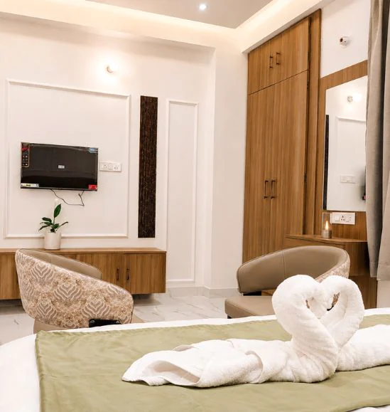

About
Hotel Vastu Premium
A hotel near RPS More in Patna, with convenient access to the Danapur area and practical guest services.
Stay close to RPS More
The Google Business Profile address places the hotel near RPS Law College in RPS Nagar, Kaliket Nagar, Patna. Public listings describe air-conditioned family rooms, Wi-Fi, private parking, restaurant service, room service and a 24-hour front desk.
For the latest room details, services and booking information, contact the hotel directly before your stay.

Hotel gallery
See more of Hotel Vastu Premium.
Explore more views of the hotel, rooms and guest spaces in the gallery.
View all hotel photos